About 53 million adults in the U.S. already give unpaid care. Siblings, spouses, and self-managing adults keep meds, rides, and appointments in their heads.
← All work
Interaction Design Practice · Fall 2025 · Group 8
Caregiver Hub
Families already do the work. They do it in group texts, MyChart, Notion, and a note on the fridge. Caregiver Hub is a shared care board — today’s tasks, who is free, who can see the health record, and a place to say you are not doing this alone.
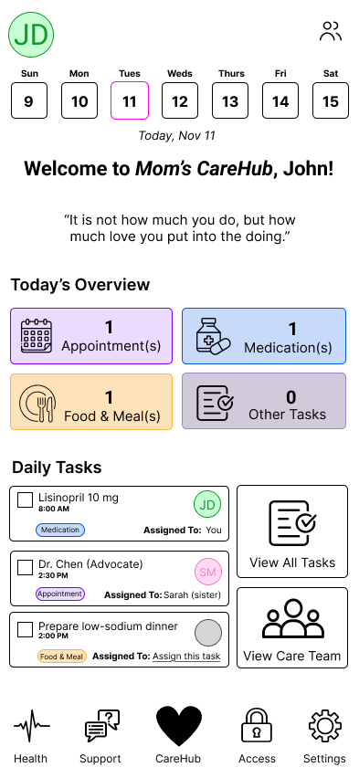
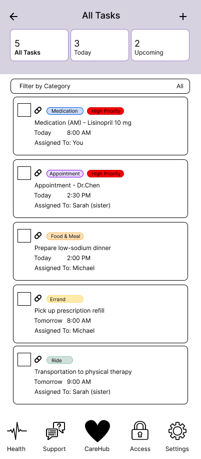
The tools are scattered. A text here, a portal there, a Google Doc for symptoms. Tasks get duplicated. The person who remembers becomes the person who burns out.
One mobile board. Assign the dinner. See who is already busy. Keep health records behind a permission, and leave room for a note that is not a task.
The problem
How do you coordinate care when the people who love someone live in different zip codes, and the systems that hold the record do not talk to each other? That was the brief for Group 8 in Interaction Design Practice: David Neish, Kellie Willis, and me.
Feinberg and Levine call the backdrop “fragmented silos of healthcare and social services.” Our interviews made it smaller and meaner. A foster-care supervisor tracking appointments in a spreadsheet, then texting a parent, then forgetting to enter the date. A self-managing adult with several chronic conditions who can keep a Notion database — until a flare week, when “keeping track of things is impossible.” An RN whose team lives in WhatsApp and paper because the official tool goes down mid-case.
Existing products solve a slice. CaringBridge is a journal. Lotsa Helping Hands is a meal train. CareZone holds a med list. None of them join long-horizon routines, a fair split of work, privacy that can differ by sister and by doctor, and a little social reinforcement in one place. We were not building an EHR. We were building the layer families invent anyway, badly.
What we heard
We interviewed four people on purpose: two adults managing their own complex care, a foster-care supervisor, and an outpatient RN. Different roles. Same friction. They did not lack apps. They lacked one place that held the task, the record, and the other human.
Goals lined up. Centralized visibility. A way to talk across a team that does not share a clinic. Symptom and appointment traces you can actually find later. The barriers lined up too: fragmented channels, cognitive fatigue in high-frequency weeks, and records that vanish when someone else was supposed to write them down.
“Everything. The health system is not set up for complex medical care.”
“I get overwhelmed and keeping track of things is impossible.”
“If they lose track, I have to track it down myself.”
-
01
One board, or it is another database.
People will not add a seventh tool. Home has to show today, the open task, and a door to the team without a tour.
-
02
Assignment needs a workload, not a name list.
Paper testers refused to pile dinner on Sarah when she already had the 2:30 appointment. Busy and available had to be visible.
-
03
Privacy is a role, not a toggle named “share.”
A sister who coordinates is not the same as a brother who should not see the chart, or a doctor who should not assign household tasks.
-
04
Encouragement is not decoration.
Caregivers asked for gratitude and a check-in, not only a queue. Support sits in the tab bar on purpose.
What I owned
The product is the team’s. My slice was the structure and the coordination path. I drafted the first problem-space write-up, helped draw the information architecture, and designed the low-fidelity wireframe for “assign pick up a medication, then mark it done.” On paper I wrote the intro and ran the second validation — find an unassigned task and give it to someone else. In the hi-fi file I took View Tasks, Care Chat, Privacy & Access, and the calendar strip. Kellie carried the visual system forward from paper. David built Health, Expenses, Settings, and the vitals and money screens.
The product
The in-app board is Mom’s CareHub. John opens Tuesday and sees the week, four counts, and three tasks. Lisinopril is his. Dr. Chen is Sarah’s. Dinner is still a hole — “Assign this task” — because an empty owner is the failure mode we kept hearing. Two doors sit beside the list: all tasks, and the care team. The heart in the tab bar is home. Health, Support, Access, and Settings are one tap away, not a buried hamburger.
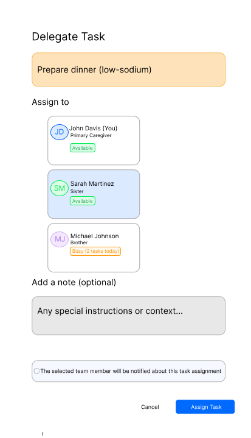
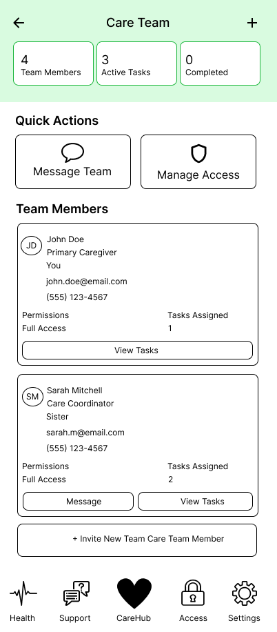
Assign without guessing
Prepare dinner (low-sodium). Three people. John is available. Sarah is available. Michael is busy with two tasks today. Testers on paper asked for exactly that signal. The note field is optional. The notify line is not a surprise — the selected person hears about it. Cancel stays a text link. Assign Task is the only filled button.
The team is a place, not a settings footnote
Four members, three active tasks, a message-the-team action, and manage access. John’s card says primary caregiver and you. Sarah’s says coordinator and sister. Phone and email are on the card because a tester asked for them. Invite is a real control, not a dead end.
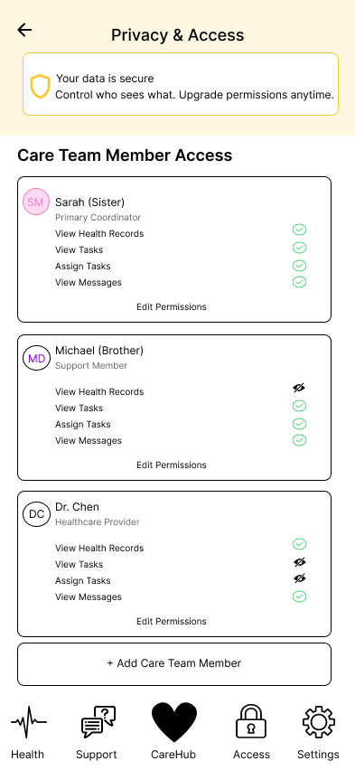
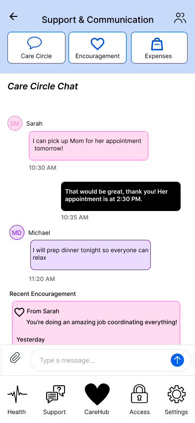
Privacy as four permissions
This is the screen I cared about most. View health records, view tasks, assign tasks, view messages. Sarah has all four. Michael can work the board and cannot open the record. Dr. Chen can see health and messages and cannot run the household list. Edit permissions is on every card. The yellow banner is a promise, not a legal PDF: you decide who sees what, and you can tighten it later.
Care circle chat
Usability testers found encouragement without a hunt. Care Circle, Encouragement, and Expenses share a header so communication is not a second app. Sarah can take Mom tomorrow. Michael will cook. The pink card underneath is yesterday’s “you’re doing an amazing job” — the social reinforcement the research said caregivers were missing when the only channel was a task.
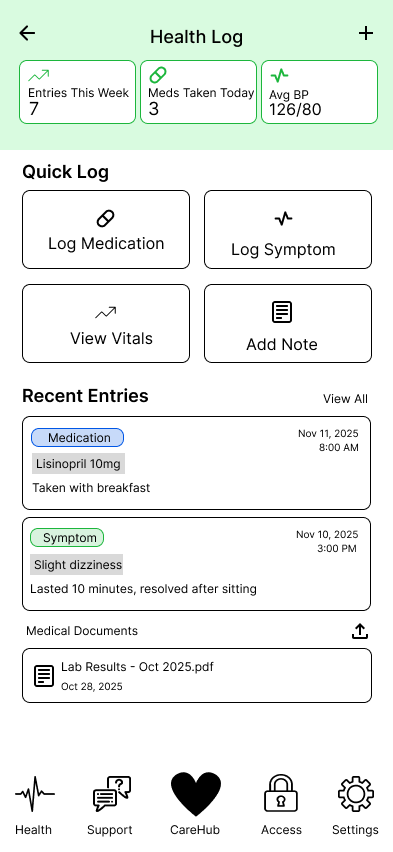
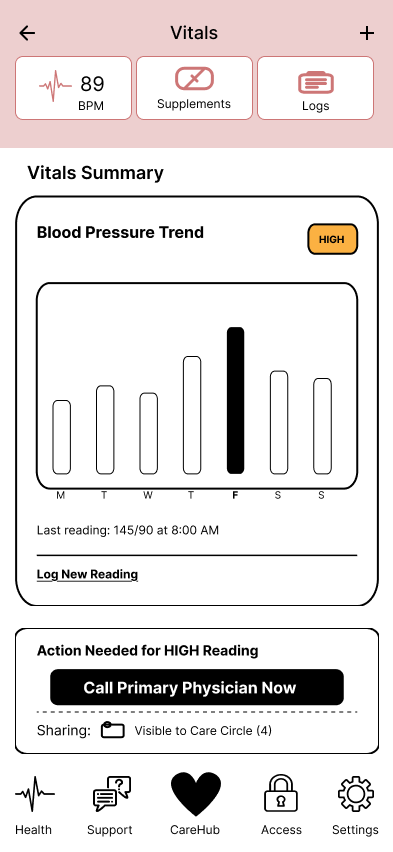
Health and money sit with the board
David’s screens keep the same outlined cards so the hub does not change personality when you leave home. Health Log is a week of entries, a 2×2 quick log, and the file you would otherwise hunt in email. Vitals shows 145/90 with a HIGH tag and a black button: Call Primary Physician Now. We renamed Log Vitals to View Vitals after a tester missed the meaning. Expenses puts deductible and out-of-pocket on one card because testers went there first and stayed on the leftover budget.
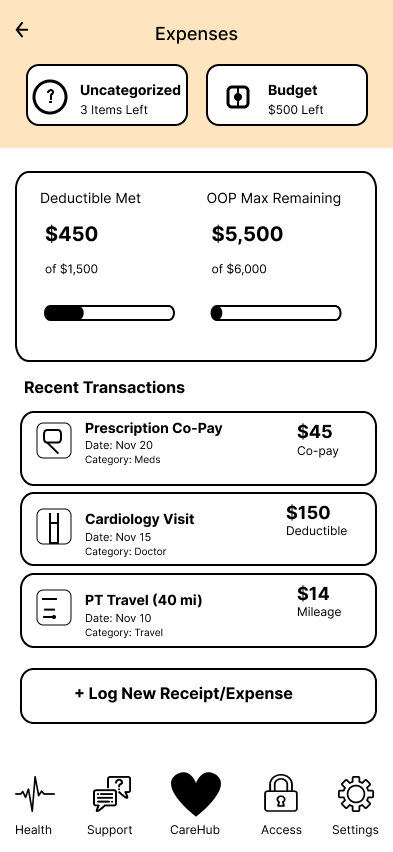
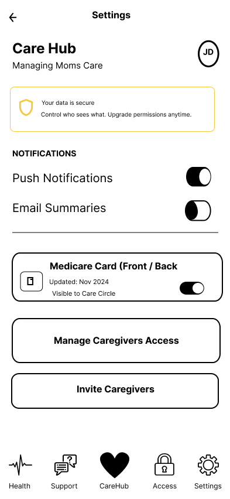
Design decisions
-
01
Today’s overview is a count, not a feed.
One appointment, one med, one meal. Testers used those tiles to find the work. A social feed would have hidden Tuesday.
-
02
Unassigned is a first-class state.
“Assign this task” is louder than a blank checkbox. Paper testers could not tell if a check completed the work or opened delegate. We split those actions.
-
03
Five tabs, one heart.
Home, health, support, access, settings. The IA we drew after interviews. If a caregiver has to remember whether the board is a hub, we already lost.
How we got there
We started with a problem space, not a palette. Interviews first. Then an IA around five areas: home, tasks, health log, communication, privacy. The first user flow was stubbornly small — pick up a medication, assign it, mark it done — because if that path was muddy, a vitals graph would not save us.
Paper made the fights cheap. One tester wanted the care recipient on every task. Another asked whether the checkbox was complete or delegate, and whether Sarah was already booked. We took that into the hi-fi assign list. The dynamic file is still a class prototype: clickable enough to test, not a shipped product.
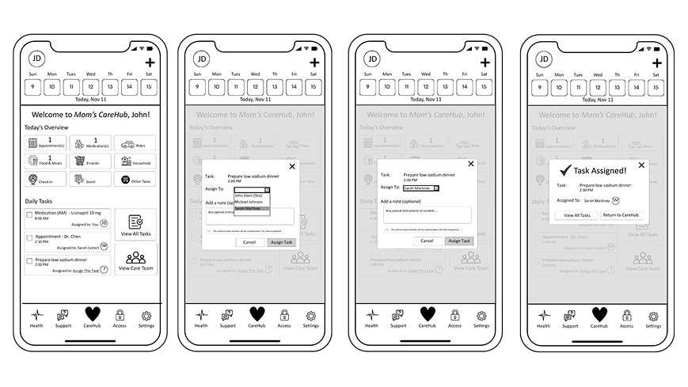
-
Frame
Name the silos
Family care and self-management, not a hospital EHR. Texts and portals as the competition.
-
Hear
Four interviews
Foster care, two chronic-illness adults, an RN. Same wish: one board, less hunting.
-
Paper
Assign, then done
Two flows. The cousin who caregivers told us Sarah was already busy.
-
Test
Three caregivers
Ages 27, 55, 60. Hub versus board. Checkboxes. Then we fixed the labels we could.
What we made
A hi-fi mobile prototype of a family care board: today, a task list, delegate with availability, a team directory, role-based access, circle chat, a health log, vitals with a call path, expenses, and settings. There is no live app. The Figma file is the artifact — and the interviews and the three usability sessions are why the file looks like this and not like another calendar.
The test was honest. Daily tasks: 1.5 of 3 clean. Assign: 2 of 3. Encouragement, care team, and expenses: 3 of 3. People still tripped on whether Care Hub and Care Board were the same place. The checkbox still read as complete to some. One appointment detail link was simply broken. We would not ship those names without another pass.
- Studio
- Group 8 · Fall 2025
- Interviews
- 4 care / clinical roles
- Usability
- 3 family caregivers
- Output
- IA, paper, hi-fi proto
What I learned
Coordination products fail on nouns. Hub, board, view tasks, overview — we used all of them, and testers spent their first minute translating. If I ran this again I would pick one word for the home list and print it on the tab, the header, and the empty state.
The other lesson is workload as interface. A dropdown of names is how we first drew assign. A busy badge is what the paper session demanded. Privacy as four verbs is the same idea: do not ask people to invent a policy. Give them the rows they already argue about at the kitchen table.
What I would do next is sit with a caregiver for a real Tuesday. Two tasks: “Who has dinner?” and “Can Michael see the lab PDF?” I would add undo on complete, step-by-step detail on the appointment card, and I would stop calling the same surface two names.